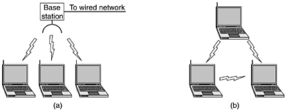
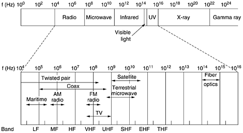

FyrlUppbyggHugm
Table of Contents
1 Hugmyndir um uppbygg fyrilstrs
- nýjir þráðlausir net staðlar
- hvað á að fjalla um?
- Þróuninn í þráðlausum netstöðlum til og með 802.16, 4G, og 802.11n
- Samhengi varðandi þráðlaus net og þráðlausa net staðla.
1.1 Tilkoma Þráðlausa neta, og þráðlausranetstaðla
Um leið og fartölvur komu á sjónarsviði, sáu margir fyrir sér þann draum að geta gengið inn á skrifstofu og fartalfan tengist sjálfkrafa við netið. Lausnin á þessu fólst í því að tengja bæði útvarpsenda og mótakara við bæði fartölvurnar og við tölvu skrifstofunar. Þetta leiddi til þess að fyrirtæki fóru að markaðsetja þráðlaus net, en hinsvegar varð til það vandamál að lausnirnar fyrir þrálausu netinn frá mismunandi fyritækjum voru ósamræmdar. Þetta leiddi á endanum til þess að IEEE var fengið til að búa til standard fyrir þráðlaus net. Þetta varð 802.11 standardinn eða WiFi. Standardinum var ætlað að virka í tveim hömum (modes).
- m. basestation
- Peer to Peer
Fig 1-35

þráðlausir netstaðlar tilheyra neðstu tveim lögum, yfirbyggingunar.

Skrautleg saga í kringum uppgötvun Frequency hopping tækninar. Hedy Lamarr og George Antheil sem var lagasmiður, hönnuðu aðferð sem notaði 88 tíðni, líkt og nótur á píanói, til að gera útvarpstýrð tundurskeyti ónæm fyrir Jamming.
The frequency hopping pattern, (tíðnis hoppunar munstrið) er gjarnan ókunnugt þeim sem er ekki er ætlað að hlusta).
1.2 ISM böndinn
Tíðni rafsegulgeislunar.

802.11 staðlarnir nota ISM böndin (Industrial Scientific Medical), og það eru takmarkanir sett á með hversu miklum krafti má senda út. e.g. 1 watt t.d. í B.N.A.
ISM böndinn:

Samhengi á milli bandbreiddar og gagnamagns skv. Henry Nyquist, Claude Shannon
Hámarks fræðl. fjölda bita á sekundu MAX(bps) = B log2(1+S/N). þ.s. B er bandvídd og S/N er hlutfall merkis og hávaða
Ef við gefum okkur S/N sem circa 15 dB (eitthvað sem gæti talist týpískt fyrir þráðlaus net, þó í lægri kanntinum). heimild:http://www.wirelessforums.org/wireless-networking-discussion/signal-noise-ratio-5109.html þá fæst:
104 Mbps, 334 Mbps, 500 Mbps.
samtals tæpt Gbps úr þessum ISM böndum.
1.3 Yfirlit yfir Þráðlausanetstaðla
| Netstaðall | tíðnisvið | Gagnahraði/bandvvídd | tækni og aðferðir | Langdrægni | kemur á markað | Athugasemdir |
|---|---|---|---|---|---|---|
| 802.11b | 2.4 GHz (2.412-2.472 GHz) | <= 11 Mbps -> 5-7 | DSSS,CSMA/CA,CCK | 30m(11 Mbps), 90m (1 Mbps) | 1999 | Útvíkkun á 802.11, kom á undan a |
| 802.11a | 5 GHz (5.735 - 5.860 GHz) | <= 54 Mbps -> 6-20 | 52-rása OFDM | örlítið minni en b, og veikari fyri veggjum. o.s.f.v. | 1999 | 5 GHz bandið er minna notað |
| 802.11g | 2.4 GHz (2.412-2.472 GHz) | <= 54 Mbps -> 6-19 | OFDM | 32m , 95m | 2003 | |
| 802.11n | 2.4 GHz og 5 GHz | 54 - 600 Mbps-> 140 | MIMO, frame aggregation | mismunandi | 2009 | mimi notar mörg loftnet, ístað eins |
| 802.16 | 2 til 66 GHz, meira neðst | 30-40 Mbps - 1Gbps | upp undir 2048rása OFDMA | 16 km LOS | 2009 | stefnir í svipaða átt og 4G |
| 4G | 100 Mbps |
1.4 tækni & Aðferðir, á grunnlagi
1.4.1 DSSS
http://en.wikipedia.org/wiki/Direct-sequence_spread_spectrum
notar pseudonoise runu af "chips" sem eru minni en bitarnir og runan er líka kunnug mótakandanum. -> útkomann er merki sem líkist hvítum hávaða. http://en.wikipedia.org/wiki/White_noise
enda útkoman er að bæta S/N hlutfallið því meiri chip á bita því betri, -> efnisl. takmarkað
1.4.2 CCK
http://en.wikipedia.org/wiki/Complementary_code_keying notar eithv líkt Barker cóða til að búa til pseudoranom chip vessen, 802.11b sendir 8 chippa tákn í QPSK, þ.s. hver chip er tvinntala í í QPSK fylkinnu…
1.4.3 OFDM
http://en.wikipedia.org/wiki/Orthogonal_frequency-division_multiplexing
Fjöldi nálægra mjóra bandbreiddarsneiðar bera með sér gögn. Yfileit notar hver sneið QAM eða PSK. Líkist hvítum hávaða. Umframskilyrði að sneiðarnar eru "orthagonal" þ.a. það verður ekki "cross talk", - gefur góða nýtni á rafsegulsviði, m. tákna tíðni sem nálgast Nyquist tíðninni.
Notar FFT -Fast Fourier Transform - algorithman http://en.wikipedia.org/wiki/Fast_Fourier_Transform
- OFDMA
http://en.wikipedia.org/wiki/OFDMA - Undirliggjandi fyrir 11a ofl.
http://en.wikipedia.org/wiki/IEEE_802.11a-1999- BPSK
http://en.wikipedia.org/wiki/Phase-shift_keying BPSK (Bianary Phase Shift Keying) notar tvo fasa - QPSK
http://en.wikipedia.org/wiki/Phase-shift_keying (Quadrature Phase Shift Keying) notar 4 fasa
QAM http://en.wikipedia.org/wiki/Quadrature_amplitude_modulation tvær carrier sinus bylgjur 90° hvor við annara eru útslags moduleraðar til að ná fram samblöndu af phasa breytingu (PSK) og Útslagsbreytingu (ASK) 16-QAM, 32-QAM
- BPSK
1.4.4 MIMO
1.4.5 SDM
multi user mimo
1.4.6 frame aggregation
http://en.wikipedia.org/wiki/Frame_aggregation
margir rammar sameinaðir í stærri ramma => meiri "Throughput"
1.5 MAC undirlags samskiptareglur/aðferðir 802.11
styður örryggis atriði einsog dulkóðun fram á data link laginu
1.5.1 CSMA/CA
Carrier Sense Multiple Access with Collision Avoidance.
Ólíkt og í Etherneti þá dugar ekki CSMA/CD vegna þess að merkið verður gjarnan of veikt þegar það kemur tilbaka til sendandan þ.a. ekki er hægt að reiða sig á að CD fari fram.
Reint er að ná fram CA með því að byrja á Random Backoff þegar stendur til að senda ramma. Þetta kerfi þarf einnig að reiða sig á Acknowledgement Ack, frá mótakandanum. Ef Ack kemur ekki frá mótakara þá er því tekið sem svo að collision hafi átt sér stað og Backoff er stækað með veldisbundnum hætti upp að vissu marki.
1.5.2 Virtual sensing
Umfram efinislegs "sensing" fer fram "virtual sensing" þ.s. hver stöð heldur uppi bókhald um hvenær rás er í notkun með því að taka mið af NAV (Network Allocation Vector) sem er hluti af hverjum ramma sem tilkynnir áætlaðann tíma sem runan sem ramminn er hluti af á að taka í sendingu.
1.5.3 Ramma Strúktúr

Frekar involveraðar ítarlegar samskiptareglur, tög eru skilgreind (data,control,managment) og undirtög, (t.d. RTS(Ready To Send) og CTS (Clear To Send)). Retry biti merkir hvort um sé að ræða aðra tilruan til sendingar. Duration svið fyrir NAV mekanismann o.s.f.v.
Date: 2012-11-03 04:25:46 GMT
HTML generated by org-mode 6.33x in emacs 23